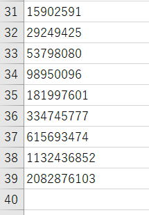
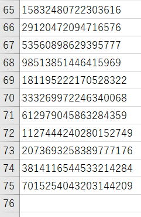
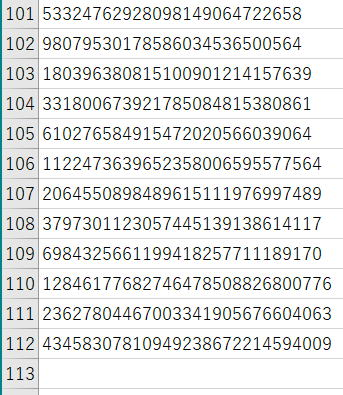

VBA100本ノック 50本目：トリボナッチ数列
直前の三項の和として各項が定まるトリボナッチ数列を出力する問題です。
ツイートでの見やすさを考慮して、ブック・シート指定等を適宜省略しています。
出題
記念すべき50本目は数学です。
直前の三項の和として各項が定まるトリボナッチ数列を出力してください。
0,0,1,1,2,4,7,13,24,44,81,149,274,…
最初の0,0,1は固定です。
※エクセルの限界まで出力してみましょう。
※出力先は任意
・再帰の練習にやってみるのもよいかも。
・VBAの整数の桁数の限界に挑戦、どこまでいけるのかな。
頂いた回答
解説
n1,n2,n3→n2,n3,n1+n2+n3
まずデータ型はもっともよく使われるLong型でやってみます。
出力はシートのA列に順に出力していきます。
エクセルは15桁までしか正しく扱えませんので、数値としてではなく文字列として出力します。
Sub VBA100_50_01()
On Error GoTo ErrExit
Dim n1 As Long: n1 = 0: Cells(1, 1) = "'" & n1
Dim n2 As Long: n2 = 0: Cells(2, 1) = "'" & n2
Dim n3 As Long: n3 = 1: Cells(3, 1) = "'" & n3
Dim i As Long: i = 3
Dim ntmp As Long
Do
ntmp = n1 + n2 + n3
i = i + 1
Cells(i, 1) = "'" & ntmp
n1 = n2
n2 = n3
n3 = ntmp
Loop
ErrExit:
End Sub

エクセルが64bitならLongLong型があります。
今度は、Do...Loopではなく再帰させてみましょう。
Sub VBA100_50_02()
Dim n1 As LongLong: n1 = 0: Cells(1, 1) = "'" & n1
Dim n2 As LongLong: n2 = 0: Cells(2, 1) = "'" & n2
Dim n3 As LongLong: n3 = 1: Cells(3, 1) = "'" & n3
Dim i As Long: i = 4
On Error Resume Next
Call VBA100_50_02_recur(i, n1, n2, n3)
End Sub
Sub VBA100_50_02_recur(i, n1 As LongLong, n2 As LongLong, n3 As LongLong)
Dim n As LongLong: n = n1 + n2 + n3
Cells(i, 1) = "'" & n
i = i + 1
Call VBA100_50_02_recur(i, n2, n3, n)
End Sub

変数宣言のデータ型にはありませんが、VBAではDecimal型を扱う事が出来ます。
変数はVariantで定義しておいて、CDec関数でDecimal型として格納します。
Sub VBA100_50_03()
On Error GoTo ErrExit
Dim i As Long
Dim n1, n2, n3, ntmp
n1 = 0: Cells(1, 1) = "'" & n1
n2 = 0: Cells(2, 1) = "'" & n2
n3 = 1: Cells(3, 1) = "'" & n3
i = 4
Do
ntmp = CDec(n1 + n2 + n3)
Cells(i, 1) = "'" & ntmp
n1 = n2
n2 = n3
n3 = ntmp
i = i + 1
Loop
ErrExit:
End Sub

VBAで普通に扱えるのはここまでです。
これ以上は自力で足し算ロジックを作成することになります。
いくつも回答が来ているので参考にしてください。
記事にはVBAコードを掲載しました。
補足
以下のページでは、Stringを1桁ずつ足し上げています。
演算スピードを考えるなら、まとまった桁数（例えばLongで8桁等）で区切って、それごとに管理して計算していく等の工夫をすると良いと思います。
サイト内関連ページ
同じテーマ「VBA100本ノック」の記事
47本目：Window操作
48本目：配列と数値型
49本目：条件付き書式の判定
50本目：トリボナッチ数列
51本目：シート一覧と印刷ページ数
52本目：複数シートの一括印刷
53本目：テーブルの扱いと年齢計算
54本目：シートのChangeイベント
55本目：他ブックのマクロを起動
56本目：数式内の自身のシート名を消す
57本目：ファイルの更新日時
新着記事NEW ・・・新着記事一覧を見る
VBA100本ノック 100本目：WEBから100本ノックのリストを取得｜VBA練習問題（3月3日）
VBA100本ノック 99本目：自動席替え（行列と前後左右が全て違うように）｜VBA練習問題（3月2日）
VBA100本ノック 98本目：席替えルールが守られているか確認｜VBA練習問題（3月1日）
VBA100本ノック 97本目：Accessデータを取得（グループ集計）｜VBA練習問題（2月27日）
VBA100本ノック 96本目：Accessデータを取得（マスタ結合&抽出）｜VBA練習問題（2月26日）
VBA100本ノック 95本目：図形のテキストを検索するフォーム作成｜VBA練習問題（2月24日）
VBA100本ノック 94本目：表範囲からHTMLのtableタグを作成｜VBA練習問題（2月23日）
VBA100本ノック 93本目：複数ブックを連結して再分割｜VBA練習問題（2月22日）
VBA100本ノック 92本目：セルの色を16進で返す関数｜VBA練習問題（2月20日）
VBA100本ノック 91本目：時間計算（残業時間の月間合計）｜VBA練習問題（2月19日）
アクセスランキング ・・・ ランキング一覧を見る
1.最終行の取得（End,Rows.Count）｜VBA入門
2.RangeとCellsの使い方｜VBA入門
3.変数宣言のDimとデータ型｜VBA入門
4.マクロって何？VBAって何？｜VBA入門
5.Range以外の指定方法（Cells,Rows,Columns）｜VBA入門
6.セルのコピー&値の貼り付け（PasteSpecial）｜VBA入門
7.繰り返し処理（For Next)｜VBA入門
8.セルに文字を入れるとは（Range,Value）｜VBA入門
9.マクロはどこに書くの（VBEの起動）｜VBA入門
10.とにかく書いてみよう（Sub,End Sub）｜VBA入門
- ホーム
- マクロVBA入門編
- VBA100本ノック
- 50本目：トリボナッチ数列
このサイトがお役に立ちましたら「シェア」「Bookmark」をお願いいたします。
記述には細心の注意をしたつもりですが、
間違いやご指摘がありましたら、「お問い合わせ」からお知らせいただけると幸いです。
掲載のVBAコードは動作を保証するものではなく、あくまでVBA学習のサンプルとして掲載しています。
掲載のVBAコードは自己責任でご使用ください。万一データ破損等の損害が発生しても責任は負いません。